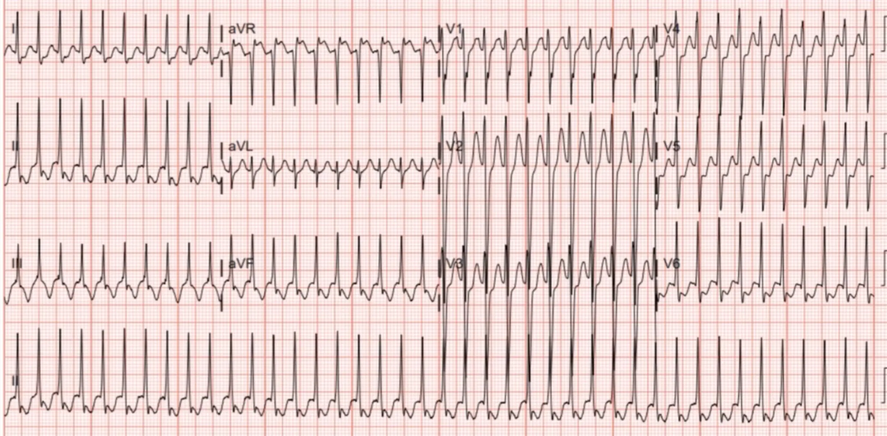
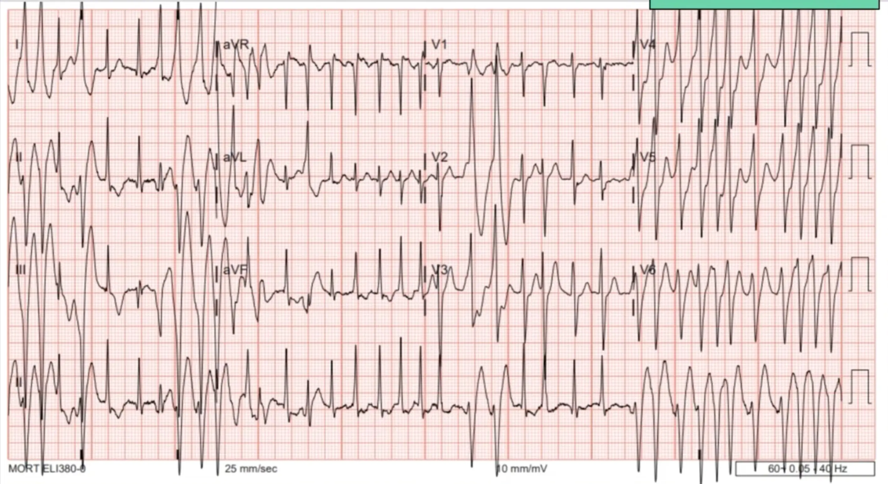
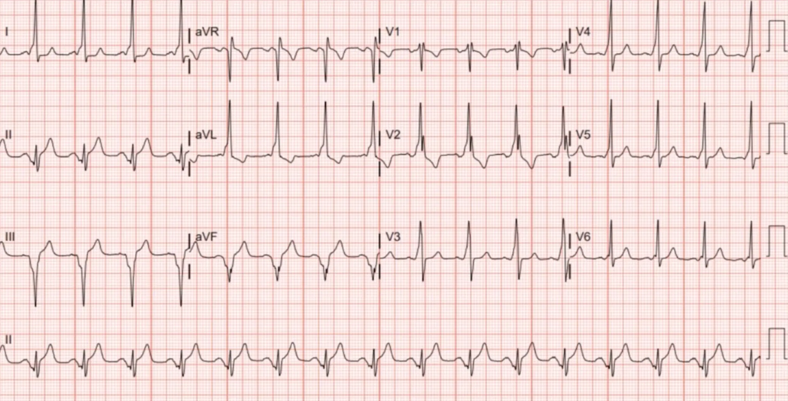
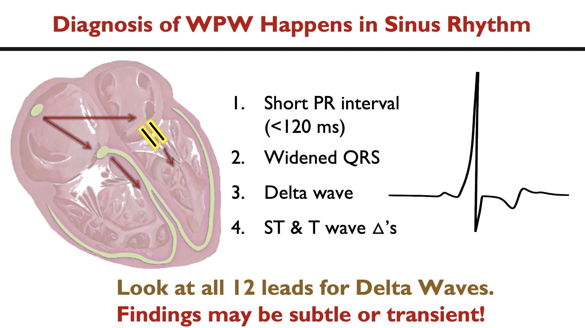
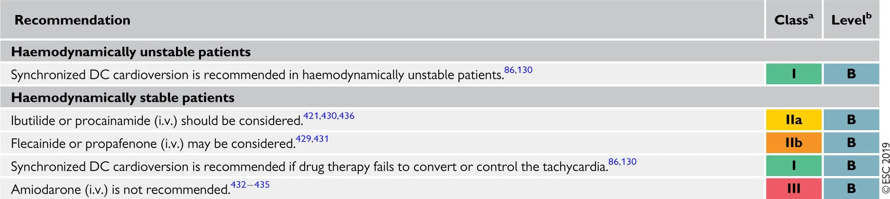
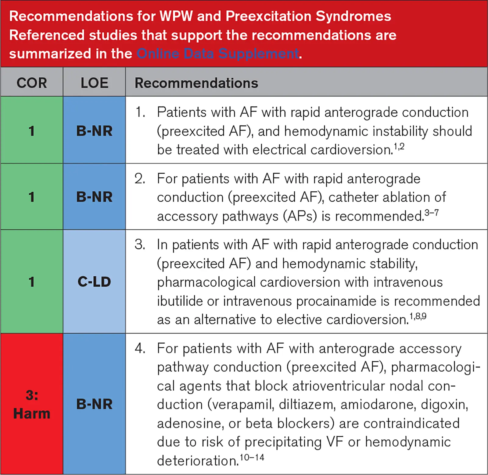

KATEGORIE 3: Intervallbezogene Anomalien
Neben der Analyse vom Rhythmus, Wellen und ganz spezifischen Zeichen müssen auch die Intervalle begutachtet werden. Dafür lohnt es sich, einfache Techniken (wie die 600er-Regel) zu lernen, mit denen sich Intervalle schnell und sicher einschätzen lassen.
Fall 6
In das WellSpan York Hospital in Pennsylvania wird ein 15-jähriger Patient eingeliefert. Beim Fußballspielen bekam er anhaltendes Herzrasen. Als Vorerkrankung ist ein Asthma bronchiale bekannt.
EKG

Das EKG wurde als SVT interpretiert und der Patient erhielt Adenosin. Da die erste Gabe ohne Wirkung blieb, wurde eine zweite Dosis verabreicht.
EKG nach zwei Dosen Adenosin

Da der Patient zunehmend instabil wurde, erfolgte eine synchronisierte Kardioversion mit 200J.
EKG nach Kardioversion

WPW (mit Vorhoffflimmern)
Beim Wolff-Parkinson-White-Syndrom (WPW) handelt es sich um eine Störung der Erregungsleitung, bei der das Herzskelett nicht nur über den AV-Knoten, sondern zusätzlich über eine akzessorische
Leitungsbahn (Kent-Bündel) durchbrochen wird. Neben paroxysmalen Tachykardieanfällen, ist vor allem die Kombination aus WPW und Vorhoffflimmern (VHF) ein besonders kritischer Notfall.
WPW-Patienten haben auch im jungen Alter ein erhöhtes Risiko für paroxysmales VHF. Zudem gibt es Medikamente die in seltenen Fällen ein VHF induzieren
können (z.B. Adenosin!)
Erkennbar ist das WPW-Muster an einer Trias aus verkürzter PQ-Zeit (< 120ms), verbreitertem QRS-Komplex und Delta-Wellen.

Orthodrome und antidrome WPW-Tachykardien im EKG sicher von anderen Tachykardien abzugrenzen, ist schwierig. Die Kombination aus WPW und VHF zu erkennen, ist dagegen von größter Bedeutung, denn die Therapie unterscheidet sich grundlegend: Es gibt nur eine sehr kleine Anzahl von Medikamenten die empfohlen werden können; ein Großteil der gängigen antiarrhythmischen Medikamente (z.B. AV-Knoten-Blocker, Beta-Blocker, Kalzium-Kanal-Blocker, etc.) sind kontraindiziert, da sie direkt ein Kammerflimmern induzieren. Daher ist die elektrische Kardioversion die Therapie der Wahl.

Recommendations for the acute therapy of pre-excited atrial fibrillation
(Procainamide und Ibutilide haben keine Zulassung in Deutschland)

Erkennbar ist WPW mit VHF an einer absolute Arrhythmie, wechselnden QRS-Morphologien und sehr hohen Kammerfrequenzen von teils 250-300bpm.